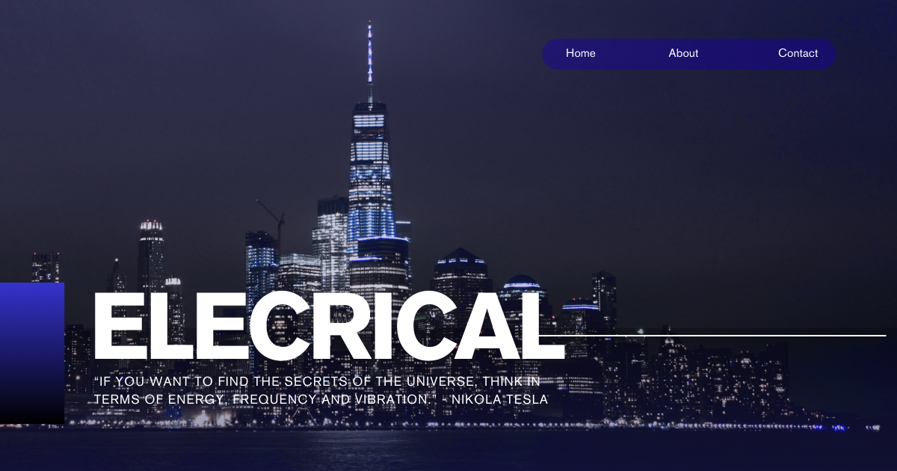

Mechatronics
Mechatronics: Integrasi Mekanika, Elektronika, dan Sistem Cerdas untuk Otomasi Modern dalam Teknik Elektro
Perkembangan industri modern tidak lagi bergantung pada satu bidang ilmu saja, melainkan pada integrasi berbagai disiplin ilmu yang mampu menghasilkan sistem otomatis yang cerdas, presisi, dan efisien. Mesin-mesin industri, robot kolaboratif, kendaraan listrik, peralatan medis, hingga sistem manufaktur pintar merupakan contoh penerapan mekatronika yang menggabungkan mekanika, elektronika, sistem kendali, sensor, aktuator, dan teknologi komputasi dalam satu kesatuan. Dalam major studi Teknik Elektro, mata kuliah Mechatronics mempelajari konsep, desain, integrasi, serta implementasi sistem mekatronika yang menjadi fondasi berbagai inovasi teknologi di era Industry 4.0 dan Society 5.0.
Mata kuliah ini membekali mahasiswa dengan kemampuan merancang sistem otomatis yang mampu mendeteksi kondisi lingkungan, mengambil keputusan, serta mengendalikan berbagai perangkat mekanik menggunakan teknologi elektronika dan kecerdasan buatan sehingga menghasilkan solusi rekayasa yang lebih efektif dan adaptif.
Apa Itu Mechatronics?
Mechatronics merupakan mata kuliah yang mempelajari integrasi berbagai cabang ilmu teknik, yaitu mekanika, elektronika, sistem kendali, instrumentasi, embedded system, dan teknologi informasi dalam pengembangan sistem otomatis yang cerdas. Tujuan utama mekatronika adalah menghasilkan sistem yang mampu bekerja secara efisien, presisi, fleksibel, dan mampu beradaptasi terhadap perubahan kondisi operasi.
Pembelajaran tidak hanya membahas setiap komponen secara terpisah, tetapi juga bagaimana seluruh komponen tersebut diintegrasikan menjadi satu sistem yang mampu melakukan pengukuran, pemrosesan data, pengambilan keputusan, dan pengendalian secara otomatis.
Ruang Lingkup Mechatronics
Mata kuliah ini mencakup berbagai konsep penting dalam pengembangan sistem mekatronika modern, antara lain:
- Konsep dasar sistem mekatronika dan integrasi multidisiplin.
- Sensor, transduser, dan sistem akuisisi data.
- Aktuator seperti motor DC, servo motor, stepper motor, BLDC, pneumatik, dan hidrolik.
- Elektronika analog, digital, serta elektronika daya.
- Embedded System menggunakan mikrokontroler, mikroprosesor, FPGA, dan System-on-Chip (SoC).
- Sistem kendali otomatis, PID Controller, Adaptive Control, dan Motion Control.
- Pemrograman sistem tertanam, komunikasi industri, dan Internet of Things (IoT).
- Robotika, Computer Vision, dan Artificial Intelligence untuk sistem otomatis.
- Perancangan, simulasi, integrasi, dan pengujian sistem mekatronika.
Ruang lingkup tersebut memberikan pemahaman menyeluruh mengenai bagaimana berbagai komponen mekanik, elektronik, dan komputasi bekerja secara terpadu dalam membangun sistem otomatis modern.
Peran Mechatronics dalam Major Studi Teknik Elektro
Dalam major studi Teknik Elektro, mata kuliah ini memiliki peran yang sangat penting karena menjadi penghubung berbagai bidang rekayasa dalam pengembangan teknologi cerdas, di antaranya:
- Menjadi dasar pengembangan sistem otomasi industri dan Smart Manufacturing.
- Mengintegrasikan elektronika, sistem kendali, robotika, dan embedded system.
- Mendukung pengembangan kendaraan listrik, robot cerdas, dan sistem otonom.
- Menjadi fondasi penelitian pada bidang mekatronika, Artificial Intelligence, dan cyber-physical systems.
- Mempersiapkan mahasiswa menghadapi kebutuhan industri berbasis Industry 4.0 dan transformasi digital.
Melalui mata kuliah ini, mahasiswa memahami bagaimana mengintegrasikan perangkat keras dan perangkat lunak menjadi sistem otomatis yang mampu meningkatkan produktivitas, kualitas, serta keselamatan kerja.
Pendekatan dalam Mechatronics
Pembelajaran menggunakan pendekatan teoritis, simulasi, praktikum laboratorium, dan project-based learning sehingga mahasiswa mampu merancang sistem mekatronika secara komprehensif, meliputi:
- Analisis kebutuhan sistem dan spesifikasi teknis.
- Perancangan mekanik, rangkaian elektronika, dan sistem penggerak.
- Integrasi sensor, aktuator, mikrokontroler, serta komunikasi data.
- Pengembangan algoritma kendali, monitoring, dan otomatisasi.
- Pengujian performa, validasi, optimasi, dan pemeliharaan sistem.
Pendekatan ini membantu mahasiswa memahami seluruh siklus pengembangan produk mekatronika mulai dari perancangan hingga implementasi pada lingkungan industri maupun penelitian.
Aplikasi Mechatronics dalam Masyarakat, Riset, dan Dunia Kerja
Sistem mekatronika telah diterapkan secara luas pada berbagai sektor yang membutuhkan otomatisasi dan sistem cerdas, antara lain:
- Robot industri dan robot kolaboratif (Collaborative Robot/Cobot).
- Smart Manufacturing dan sistem produksi otomatis.
- Kendaraan listrik, kendaraan otonom, dan sistem transportasi pintar.
- Peralatan medis, robot bedah, dan perangkat rehabilitasi.
- Drone, Autonomous Mobile Robot (AMR), dan sistem logistik otomatis.
- Smart Home, Smart Building, dan Internet of Things (IoT).
- Sistem pertanian presisi dan robot pertanian.
- Mesin CNC, sistem pengemasan otomatis, dan lini produksi modern.
- Peralatan laboratorium, instrumentasi ilmiah, dan sistem pengujian otomatis.
Dalam dunia kerja, lulusan yang menguasai mata kuliah ini memiliki peluang berkarier sebagai mechatronics engineer, automation engineer, robotics engineer, embedded systems engineer, control systems engineer, industrial electronics engineer, product development engineer, IoT engineer, manufacturing engineer, maupun peneliti pada bidang otomasi, robotika, dan sistem cerdas.
Tren Terkini Mechatronics
Perkembangan teknologi mekatronika semakin pesat seiring kemajuan Artificial Intelligence, robotika, dan sistem digital. Beberapa tren yang berkembang saat ini meliputi:
- Smart Manufacturing berbasis Industry 4.0.
- Collaborative Robot (Cobot) yang mampu bekerja bersama manusia.
- Artificial Intelligence dan Machine Learning untuk sistem otomatis.
- Industrial Internet of Things (IIoT) dan Edge Computing.
- Digital Twin untuk simulasi dan optimasi sistem industri.
- Autonomous Mobile Robot (AMR) dan sistem logistik pintar.
- Computer Vision untuk inspeksi kualitas dan navigasi robot.
- Predictive Maintenance berbasis sensor dan analisis data.
- Integrasi kendaraan listrik, robotika, dan sistem energi cerdas.
Tren tersebut menunjukkan bahwa mekatronika berkembang menuju sistem yang semakin cerdas, saling terhubung, adaptif, hemat energi, dan mampu mengambil keputusan secara otomatis dengan dukungan Artificial Intelligence serta teknologi digital.
Penutup: Fondasi Integrasi Teknologi untuk Otomasi Masa Depan
Mechatronics merupakan mata kuliah yang memberikan pemahaman mendalam mengenai integrasi mekanika, elektronika, sistem kendali, komputasi, dan teknologi informasi dalam membangun sistem otomatis modern. Mata kuliah ini menjadi fondasi penting dalam pengembangan robotika, otomasi industri, kendaraan cerdas, perangkat medis, hingga berbagai sistem cyber-physical yang mendukung transformasi digital.
Dengan menguasai Mechatronics, mahasiswa Teknik Elektro memiliki kompetensi untuk merancang, mengintegrasikan, mengembangkan, dan mengoptimalkan sistem otomatis yang inovatif, efisien, dan andal sehingga mampu berkontribusi pada perkembangan Industry 4.0, Smart Factory, Smart City, Internet of Things, serta berbagai teknologi cerdas yang menjadi masa depan dunia rekayasa.
Mahasiswa Sabi
©Repository Muhammad Surya Putra Fadillah